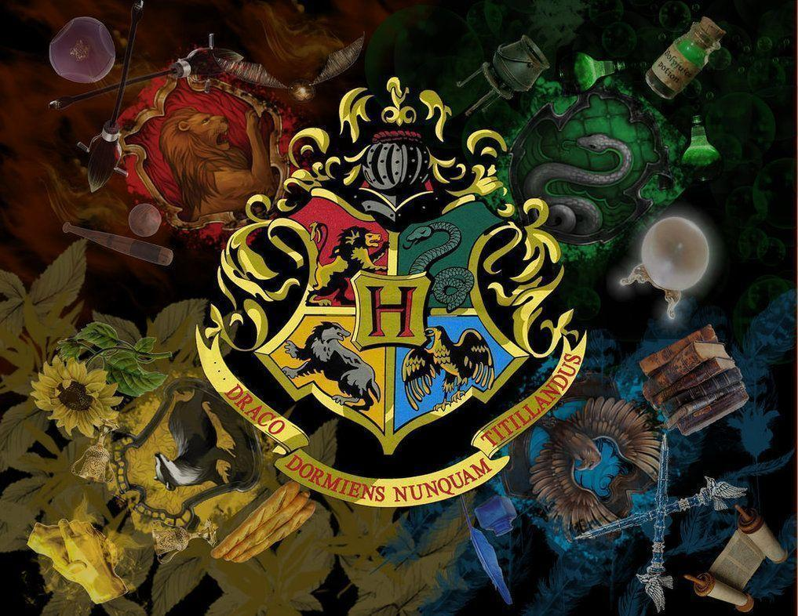

Joanne Rowling was born on 31st July 1965 at Yate General Hospital near Bristol, and grew up in Gloucestershire in England and in Chepstow, Gwent, in south-east Wales.
Her father, Peter, was an aircraft engineer at the Rolls Royce factory in Bristol and her mother, Anne, was a science technician in the Chemistry department at Wyedean Comprehensive, where Jo herself went to school. Anne was diagnosed with multiple sclerosis when Jo was a teenager and died in 1990, before the Harry Potter books were published. Jo also has a younger sister, Di.
The young Jo grew up surrounded by books. “I lived for books,’’ she has said. “I was your basic common-or-garden bookworm, complete with freckles and National Health spectacles.”
This info was taken from her website. Check Out her site!
(Daniel Radcliffe is not in this photo but most of the cast is)